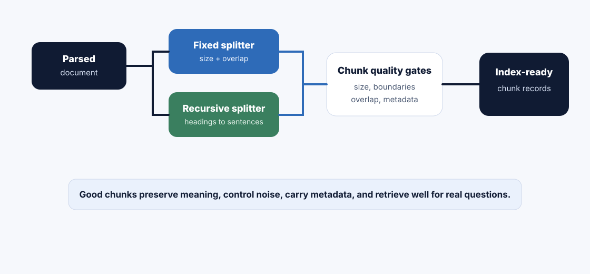

Chunking decides how your source knowledge is sliced before retrieval. Fixed chunking cuts by size. Recursive chunking tries to respect natural boundaries first. The real skill is choosing boundaries that preserve meaning without flooding retrieval with noise.
How to read this chapter
Read it as retrieval design: chunking is not formatting. It directly changes what evidence the retriever can find.
Think like a learner and a debugger: a chunk should be small enough to retrieve precisely and large enough to make sense.
Compare strategies: fixed chunking is predictable; recursive chunking is structure-aware and usually safer for text documents.
Keep production in mind: chunk size, overlap, separators, count, cost, latency, citations, and evaluation must be tuned together.
A retriever does not search your original document. It searches the chunks you created. Bad chunks turn good documents into weak evidence.
Core ideaChunking converts parsed, metadata-rich documents into retrieval units. Each chunk should carry enough local meaning, source metadata, and boundary context to be useful when retrieved alone.
Sub-topic 1 of 11
Why Chunking Matters
At a glance
Tiny chunks can lose context.
Huge chunks can retrieve too much noise.
Overlap protects boundary context but increases cost and duplication.
Why this matters: when a RAG answer misses a policy exception, the model may not be the problem. The exception may have been cut into a different chunk than the rule it modifies.
Chunking is the first major design decision after ingestion. The pipeline has prepared a clean source. Now we decide how to slice it so a search system can retrieve the right evidence later.
Chunking north starA chunk should answer one focused retrieval need while preserving enough context to stay truthful.
The best chunk is not always the smallest or largest. It is the one that keeps the concept, exception, source, and citation boundary together.
01
What is the source shape?
Policy, FAQ, runbook, table, API docs, tutorial, legal clause, or support article.
02
What does the user ask?
Definitions, eligibility, troubleshooting, comparison, exception, step-by-step action, or exact value lookup.
If you slice a pizza into pieces that are too tiny, every bite is incomplete. If you slice it into one giant piece, nobody can handle it properly. The best slice is easy to pick up and still contains the toppings that belong together.
Chunks work the same way. A chunk should be manageable for retrieval, but it should not separate a rule from its exception, a heading from its paragraph, or a troubleshooting step from its warning.
Quick recap
Chunking is slicing knowledge for retrieval.
Boundaries matter as much as size.
Overlap helps, but it is not free.
Sub-topic 3 of 11
Fixed Chunking
Fixed chunking splits text by a target size, often characters or tokens, with optional overlap. It is simple, predictable, and easy to implement.
Can split headings from paragraphs, steps from warnings, tables from labels, and exceptions from rules.
Mentor note: fixed chunking is not bad. It is a baseline. The mistake is shipping it blindly without checking whether the chunks preserve meaning.
Sub-topic 4 of 11
Recursive Chunking
Recursive chunking tries larger natural separators first, then falls back to smaller ones. A common separator order is section, paragraph, sentence, word, and finally character.
Recursive splitting idea
Try split by headings
if chunk still too large -> split by paragraphs
if still too large -> split by sentences
if still too large -> split by words / characters
Why it exists
Respect natural boundaries
Documents already carry structure. Recursive chunking uses that structure before falling back to blunt size cuts.
Example
Policy sections
Keep "Eligibility", "Exceptions", and "Approval process" as meaningful units instead of cutting through them randomly.
Advantage
Better context preservation
Headings, paragraphs, bullet groups, and procedures often stay together, improving citations and answer faithfulness.
Watch-out
Still needs limits
Natural sections can be huge. Recursive splitting still needs max size, overlap, metadata, and validation.
Sub-topic 5 of 11
Overlap and Separators
Overlap repeats a small part of the previous chunk in the next chunk. It helps preserve context at boundaries, but too much overlap creates duplicate retrieval and higher cost.
Production case study
Policy exception at the boundary
A refund policy says annual plans are refundable within 14 days. The next paragraph says enterprise contracts require account-manager approval. If the split separates the rule and exception, the assistant may answer too broadly.
No overlap: faster and cheaper, but boundary context may be lost.
Moderate overlap: safer for policies, procedures, and explanations.
High overlap: can cause duplicate retrieval and distract the model.
Separator choices
Headings, paragraphs, bullet lists, sentences, code blocks, table rows, and line breaks.
Overlap choices
Usually enough to carry local context, not enough to make chunks near-duplicates.
Metadata choices
Every chunk should keep source id, chunk id, heading path, section, page or row, version, access, and index version.
Sub-topic 6 of 11
Production Trade-Offs
Accuracy
Small chunks can miss meaning
They retrieve precisely, but may not include the full rule, exception, or procedure needed for a faithful answer.
Noise
Large chunks can blur intent
They include more context, but can mix multiple topics and reduce retrieval precision.
Scale
More chunks increase index size
Small chunks and high overlap create more embeddings, more storage, more reranking work, and higher cost.
Citations
Boundary quality affects trust
Good chunks make citations inspectable. Bad chunks cite broad pages or partial evidence that reviewers cannot trust.
Sub-topic 7 of 11
Architecture View

Chunking turns parsed documents into retrieval units, then quality gates decide whether those units are ready for embedding and indexing.
Chunking pipeline
parsed document
-> choose chunking strategy
-> split with metadata
-> validate chunk size and boundaries
-> detect lost context / duplicate overlap
-> embed and index chunk records
Sub-topic 8 of 11
Chunk Evaluation
Chunking should be evaluated with the same seriousness as retrieval and prompting. You are not just asking "Did it split?" You are asking "Can retrieval find useful evidence after this split?"
Production metrics
Chunk size distribution: too many tiny or huge chunks signals unstable boundaries.
Boundary break rate: how often rules and exceptions split apart.
Duplicate overlap rate: how often near-identical chunks dominate retrieval.
Recall@k by golden question: whether the right chunk appears in top results.
Citation support: whether retrieved chunks fully support final claims.
Context utilization: whether the model actually uses retrieved chunks.
Senior habit: test chunking with real questions, not only average chunk size. A beautiful size distribution can still fail important questions.
Sub-topic 9 of 11
Common Mistakes
M01
Choosing chunk size by default
Symptom: every corpus uses the same 500-token setting.
Better move: tune by document type, question shape, and evaluation results.
M02
Splitting headings from content
Symptom: chunks lose the topic label that makes the paragraph meaningful.
Better move: preserve heading path in metadata and chunk text when useful.
M03
Using overlap as a magic fix
Symptom: retrieval returns many duplicate chunks.
Better move: use moderate overlap and deduplicate near-identical results.
M04
Ignoring tables and lists
Symptom: rows lose headers, units, or eligibility labels.
Better move: chunk tables with row, column, caption, and source metadata.
M05
Making chunks too large
Symptom: chunks retrieve broadly but contain too many topics.
Better move: split by natural sections and use reranking for precision.
M06
Making chunks too tiny
Symptom: the retriever finds isolated fragments that cannot answer alone.
Better move: include local context, headings, and enough surrounding text.
M07
Not versioning chunking strategy
Symptom: nobody knows which splitter created a bad chunk.
Better move: store chunker version, chunk size, overlap, separators, and source lineage.
M08
Skipping retrieval evals after chunking changes
Symptom: a new chunker silently hurts top-k results.
Better move: run golden retrieval tests before re-indexing goes live.
Sub-topic 10 of 11
Mini Assignment
Choose one source type: policy, runbook, tutorial, support article, or pricing table. Propose a fixed chunking baseline and a recursive chunking strategy. Include chunk size, overlap, separators, required metadata, and two golden questions to test the result.
Sub-topic 11 of 11
Points To Remember
Chunking creates retrieval units from parsed documents.
Fixed chunking is simple and predictable but may cut through meaning.
Recursive chunking tries natural boundaries before falling back to smaller splits.
Overlap protects boundary context but increases duplication and cost.
Chunking should be evaluated with real retrieval questions, not only size statistics.
Next, test chunking judgment in the quiz, then build a chunk-quality evaluator in exercises and the project.